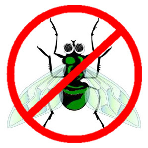
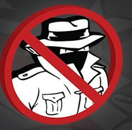

Beveiliging
van je pc
Op deze pagina hebben we het over de beveiliging van je pc. Op een Windows 10 of 11 computer is normaal gezien Windows Defender al geïnstalleerd. Dit is een redelijk goed antivirusprogramma. Vele websites beweren echter dat er betere gratis alternatieven zijn. Betalende antivirusprogramma's zouden artificiële intelligentie gebruiken om nog sneller virussen tegen te houden.
Let wel
op:
- Een 'gekocht' antivirusprogramma (vb. Panda, McAfee, Norton,
...) moet jaarlijks worden verlengd. Indien je termijn al een
tijdje verstreken is, heb je er eigenlijk geen bescherming meer
aan en kan je misschien toch overwegen één van
de hier vermeldde programma's te installeren.
- Wanneer je meer dan één firewall of antivirus
installeert, riskeer je dat je pc niet meer zal functioneren.
Verwijder dus eerst het vorige voordat je een nieuwe antivirus
of firewall installeert!
- Een firewall beschermt een gebruiker (in een LAN) tegen aanvallen
vanuit een WAN (het internet). Dat is niet hetzelfde als een
virus! Windows heeft een ingebouwde firewall. Die volstaat.
- Wanneer je een nieuwe pc koopt, is er meestal een tijdelijke
antivirus geïnstalleerd voor 1 maand. Indien je denkt dat
antivirusprogramma niet aan te kopen, is het allicht beter het
onmiddellijk te verwijderen en een antivirusprogramma uit onze
lijst te installeren.
- De meeste
beveiligingsprogramma's krijgen geregeld een update. Bij de lokale
kopies hieronder zal je dan ook meestal alleen een on-line installer
vinden ofwel helemaal geen.
Op deze pagina hechten we eveneens belang aan het opruimen van je computer en het beveiligen tegen malware (spyware, ...).
Wat is het beste antivirusprogramma? Dat is een zeer moeilijke vraag. De waardeoordelen die je op het internet kan vinden gaan zowat alle richtingen uit. Volgens de ene is vb. Total AV het beste, een andere stelt dan weer dat dat ondermaats is. Bitdefender staat bij nogal wat besprekingen bij de betere genoteerd. Avast en Avira zijn programma's die al pakweg 30 jaar beschikbaar zijn. Opzoekwerk over een vergelijking van beide op het internet spreekt elkaar ook weer tegen. De meeste commentaren stellen dat ze beide goed zijn. Avast heeft het voor- of nadeel dat je de update manueel moet starten. Dat is een voordeel als je als gebruiker geregeld (vb. twee keer per week) deze taak start zodat de update niet opstart bij elke herstart van de computer. Het is echter een nadeel als je die update vergeet te starten, want dan is de bescherming toch minder goed.
Naam: Bitdefender
Categorie: antivirus
Waardeoordeel: 5
Waardeoordeel op een schaal van 5 .. 1 (5='need to have', 3='good
to have', 1='nice to have')
Download van internet - lokale kopie downloader
Beschrijving:
Bitdefender staat op verschillende websites vermeld als een zeer
goed antivirusprogramma! Bitdefender Total Security bestaat eveneens.
Dat is echter niet gratis. De vergelijking met het antivirusprogramma
alleen staat op de downloadpagina.
Naam: Avast! en AVG
Categorie: antivirus
Waardeoordeel: 5
Waardeoordeel op een schaal van 5 .. 1 (5='need to have', 3='good
to have', 1='nice to have')
Download Avast van internet - lokale kopie Avast downloader
Beschrijving:
Avast! is een goed welgekend antivirusprogramma, beschikbaar
in het Nederlands. Het enige probleem is dat het niet samenwerkt
met Thunderbird (e-mailaprogramma). Als je Thunderbird gebruikt,
kan je beter voor Avira kiezen.
AVG is een tijdje geleden opgekocht door Avast. Het is ook één van de klassieke antivirusprogramma's.
Download AVG van internet - lokale kopie AVG downloader
Naam: Avira
Categorie: antivirus
Waardeoordeel: 5
Waardeoordeel op een schaal van 5 .. 1 (5='need to have', 3='good
to have', 1='nice to have')
Download van internet - lokale kopie downloader
Beschrijving:
Avira is een goed welgekend antivirusprogramma, zonder sleutel
aan te vragen. Het levert wel geen bescherming tegen virussen
via e-mail (voordat de mail wordt geopend). Engelstalig. Installatietips
Naam: Norton
Categorie: antivirus
Waardeoordeel: 5
Waardeoordeel op een schaal van 5 .. 1 (5='need to have', 3='good
to have', 1='nice to have')
Beschrijving:
Norton antivirus is geen gratis programma. Vele websites beweren
dat het één van de beste betalende antivirusprogramma's
is. Een betaalbare versie is verkrijgbaar op deze link.
Naam: CCleaner
Categorie: Opruimen computer: registry, buffers van browsers, ... .
Waardeoordeel: 5
Waardeoordeel op een schaal van 5 .. 1 (5='need to have', 3='good
to have', 1='nice to have')
Download van internet - lokale kopie
Beschrijving:
CCleaner is een zeer gekend programma om je computer geregeld
op te ruimen: wissen van de buffer van je webbrowser, tijdelijke
bestanden, ... . Opruimen van je registry (verkeerde sleutels,
...). Er verschijnen geregeld updates, zodat je best de versie
van de CCleaner website installeert.
Naam: Malwarebytes en ADWCleaner
Categorie: antispyware
Waardeoordeel: 5
Waardeoordeel op een schaal van 5 .. 1 (5='need to have', 3='good
to have', 1='nice to have')
Malwarebytes: Download
van internet - lokale kopie
ADWCleaner: Download
van internet - lokale kopie
Beschrijving:
Malwarebytes gaat na of er malware (spyware, ...) op je computer
staat. Het is zeer efficiënt. Een aanrader!
ADWCleaner is van hetzelfde softwarehuis.
Naam: Spybot
Categorie: antispyware
Waardeoordeel: 5
Waardeoordeel op een schaal van 5 .. 1 (5='need to have', 3='good
to have', 1='nice to have')
Download van internet - home - lokale kopie
Beschrijving:
Dit is een adware en spyware verwijdersoftware. Het is nuttig
wanneer je pc tekenen van dat soort infectie vertoont. Dit programma
kan real-time bescherming geven en is zeer populair. Nederlands.
Naam: Superantispyware
Categorie: antispyware
Waardeoordeel: 3
Waardeoordeel op een schaal van 5 .. 1 (5='need to have', 3='good
to have', 1='nice to have')
Beschrijving:
Dit is een adware en spyware verwijdersoftware. Het is nuttig
wanneer je pc tekenen van dat soort infectie vertoont. Volgens
sommige websites is het zeer efficiënt.
Naam: Zone
Alarm
Categorie: firewall
Waardeoordeel: 4
Waardeoordeel op een schaal van 5 .. 1 (5='need to have', 3='good
to have', 1='nice to have')
Download van internet - Lokale kopie
Beschrijving:
Een firewall beschermt je computer tegen ongewenste indringers.
Allicht is dit een zeer nuttig middel om je pc te beschermen
in een omgeving met veel gebruikers (die allemaal zonder het
te weten ongewenste software op hun pc kunnen hebben.) Nederlands,
gebruiksvriendelijk.
Naam: PC
tools firewall
Categorie: firewall
Waardeoordeel: 2
Waardeoordeel op een schaal van 5 .. 1 (5='need to have', 3='good
to have', 1='nice to have')
lokale kopie
(PC Tools Firewall bestaat niet meer alleenstaand. Je kan hier
een de laatste versie downloaden)
Beschrijving:
Een firewall beschermt je computer tegen ongewenste indringers.
Allicht is dit een zeer nuttig middel om je pc te beschermen
in een omgeving met veel gebruikers (die allemaal zonder het
te weten ongewenste software op hun pc kunnen hebben.) Nederlands,
gebruiksvriendelijk.